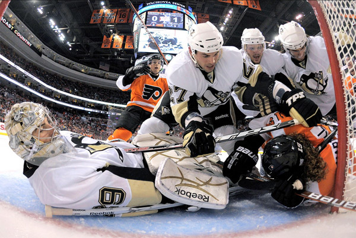
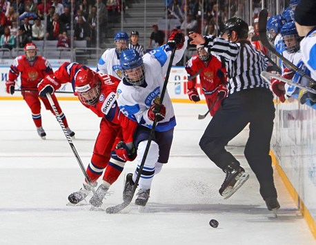
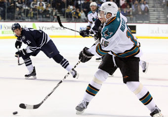
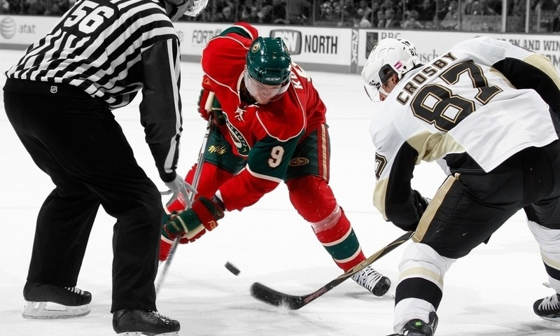
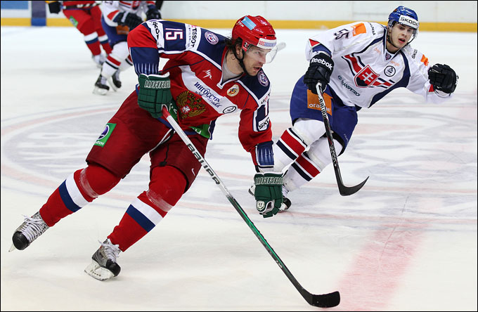

Хоккей
Сражения мастеров клюшки и шайбы исторически привлекали к экранам и радиоприёмникам миллионы болельщиков по всему миру, а по популярности этот вид спорта вполне сопоставим с футболом. В России уж точно. И если среди наших читателей остались люди, которые не знают, что такое хоккей, следующие несколько абзацев специально для вас.
На залитой льдом площадке 58 x 30 метров с закруглёнными бортами бьются две команды. В пределах коробки одновременно могут находиться те самые «великолепные пятерки и вратарь». Игроки каждой из команд делятся на разные амплуа. Защитники, форварды и вратари. Как правило, на площадке обычно находится вратарь, два защитника и три форварда. Отклонения от правила численного состава происходит в том случае, если та или иная команда оказалась в меньшинстве.
Такое происходит, если арбитр за нарушение правил удаляет на 2, 5 или 20 минут игрока команды-соперника. Полевые игроки вооружены клюшками, с помощью которых должны загнать шайбу в ворота. Вратарь, помимо большей по размерам по сравнению с полевыми игроками клюшки, оснащен ловушкой, которой может ловить шайбу, а также блином – широкой перчаткой, которая предназначена для защиты тыловой части кисти руки, которой голкипер держит клюшку. Также в состав экипировки хоккеистов входят различные нагрудники, ракушки и другие защитные инструменты, призванные защитить их от попадания шайбы, скорость полета которой порой достигает сотни км/ч.
Интересный факт
Скорость шайбы при сильном броске достигает 170 км/ч.
Стандартный хоккейный матч длится 3 периода по 20 минут, между которыми происходит заливка льда. Если по истечении 60 минут игрового чистого времени победитель не выявлен, назначается дополнительное время (овертайм), в течение которого действует правило «золотого гола». Победителем становится команда, которая за это время сумела поразить ворота соперника. Если игра проходит в турнире на выбывание, то в случае, если и овертайм закончился вничью, назначается серия буллитов. Буллит – штрафной бросок, который исполняет полевой игрок одной из команд. Он подхватывает шайбу в центральном круге и движется с ней по направлению к вратарю соперника. Его задача по-прежнему забить шайбу в ворота. В серии послематчевых буллитов команды совершают по три броска. Если и по истечении серии сохраняется ничья, то игроки команд будут продолжать исполнять буллиты вплоть до первой ошибки одного из хоккеистов.
Хоккейный олимпийский турнир делится на групповую стадию и стадию плей-офф. Во время первой стадии 12 команд-участниц делятся на 3 группы по 4 команды. В каждой группе команды по разу играют друг с другом. За победу в основное время команда получает 3 очка, за победу в овертайме или по буллитам — 2 очка, за поражение в овертайме или по буллитам — 1 очко, за поражение в основное время — 0 очков. По итогам выступления сборных в групповом этапе, лучшие попадают в стадию плей-офф, которая, по сути, является стадией матчей на вылет. Олимпийским чемпионом становится та сборная, которая успешно преодолеет все стадии плей-офф и выиграет в финале. Главными фаворитами на победу на ближайшей Олимпиаде станут сборные Канады, США, России, Швеции и Финляндии.
{kind=link}
{kind=link}
{kind=link}
{kind=link}
{kind=link}